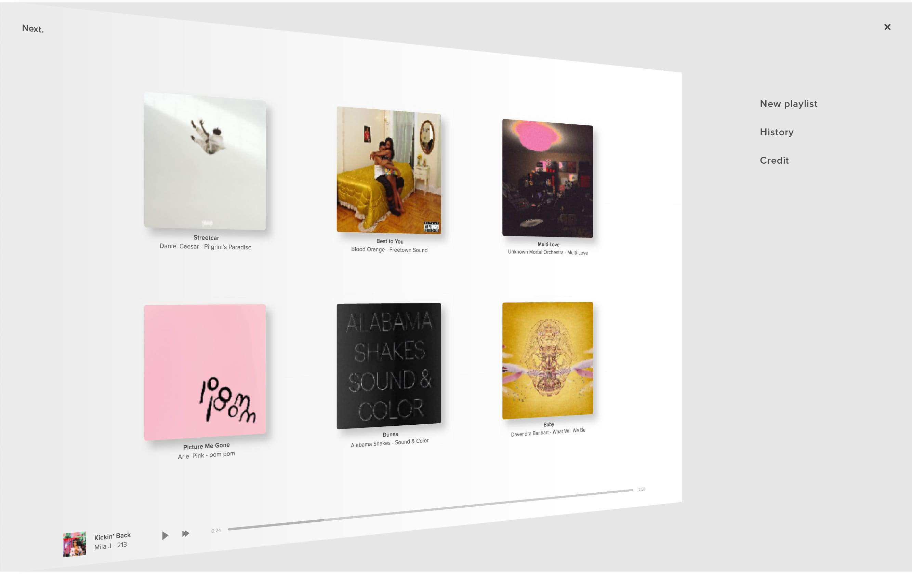
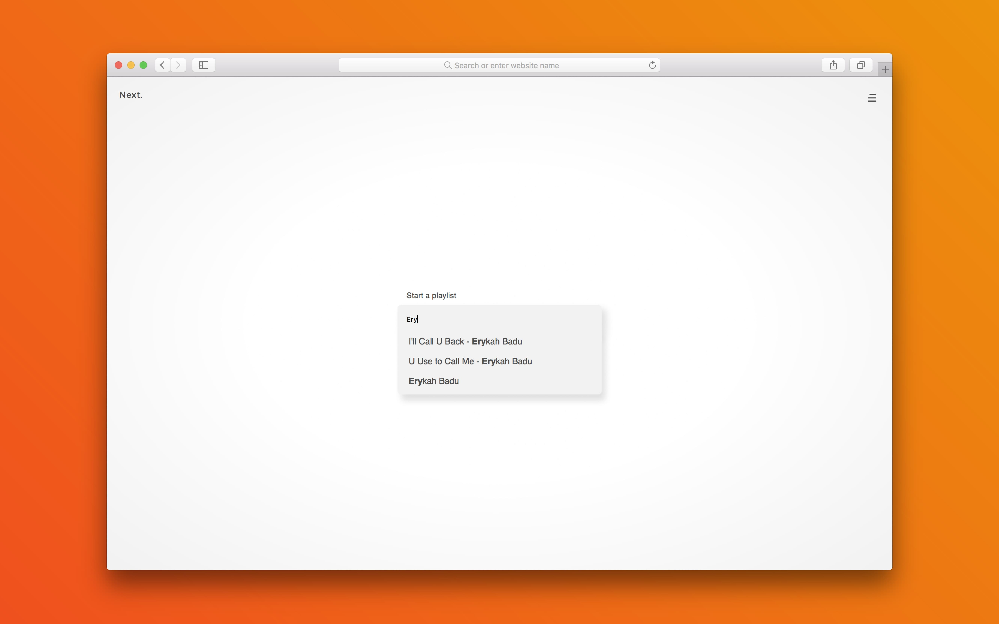

Next. Music Player
An effortless playlist generator
Next. is a playlist generator designed to take the stress away from choosing the right song. An intentionally paired back interface presents the viewer with a balance of control and restraint. The webpage is limited to a small selection of tracks and the project serves as a demonstration of UI and development skills.

Design process
A number of wireframes were considered each focusing on different aspects of the user experience. The three concepts were based around either; the current playing track (Focused), a small selection of upcoming options (Light), or a lot of information and choice (Rich). Pictured below are the two concepts ‘Focused’ and ‘Rich’.

Below is the chosen wireframe, ‘Light’, which was most aligned with the original vision. The ‘Light’ concept put the most emphasis on upcoming track options. Next. is designed as a tool that will disappear into the background of social settings making song selection a simple task, by displaying a selection of 4-6 songs the user has an amount of control without an overwhelming choice.

The last step before development was to produce a render to work from. This process allows for experimentation with type and scale to find visual balance. Often changes are made on the fly while developing however starting with a high resolution render keeps the project focused and moving in the right direction.
Development process
As Next. is simply a prototype all that was required for development was HTML, CSS and jQuery. The two most complex parts of the project are the search functionality and the player itself. Search functionality is the only plugin used in the project (EasyAutocomplete by Łukasz Pawełczak) which suggests options of artists or track names. The result of the search is then compared to a list of options in HTML which contain custom attributes the jQuery uses to source audio files. The audio tag is hidden in favour of completely customised controls. Audio functionality is thanks to a helpful post by Sabeer Shaikh for Eduonix.

The fully functional prototype can be viewed here. Below are a series of images displaying the functionality of the fully scalable product. The biggest learning curve for the project was the use of jQuery to manipulate or customise native HTML elements. A simple design at the outset eventually led to a few weeks of wrangling snippets of code until they worked together to create a seamless prototype.
